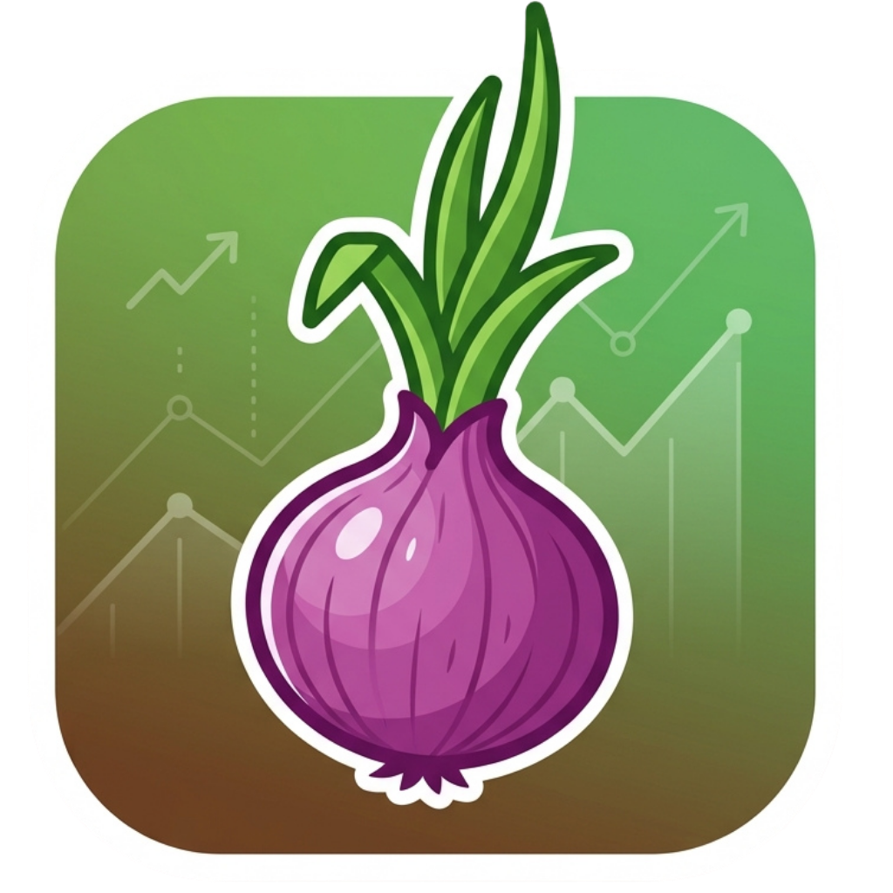

Android · Offline
Take the simulator to the field
Explore how soil pH and iron affect chlorophyll, leaf color and bulb growth — day by day. No account, no signal needed.
Download APKRequires Android 7.0 or newer. Installs alongside the web version.
- Works offline
- No account
- Free
How to install
- Download the APK using the button above.
- Open the downloaded file. If prompted, allow your browser or file manager to install unknown apps.
- Tap Install, then Open.
- That's it — the simulator runs without internet from then on.
Play Protect notice: this build is signed with a development key, so Android may warn you. Tap Install anyway if you trust the source.
Good to know
- Fully offline. The whole simulator is bundled inside the app.
- Same model as the web version. Sliders, planting methods, stages and the live report are unchanged.
- Reference links open in your browser and need internet.
- Teaching tool, not a soil test. Use it to build intuition, not to replace agronomic advice.
Verify your download
80f00c9a70652713eabae4c529a46aadf91bf960fb451b88bb757a162ef38cd9
Prefer not to install anything? Open the web simulator.